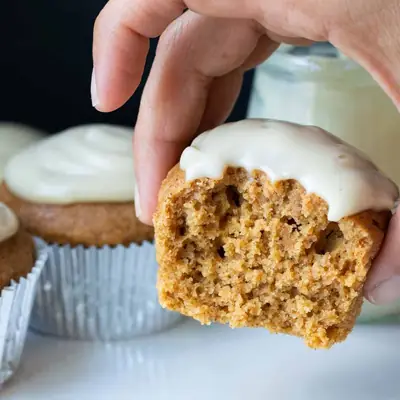

Healthy Vegan Pumpkin Cupcakes

Ingredients
- 1 cup oat flour
- 6 tablespoons almond flour (, make sure it is fine grained)
- 10 tablespoons cane sugar (, 1/2 cup plus 2 tablespoons (see note)
- 1 ½ teaspoons baking powder
- ½ teaspoon sea salt
- 1 tablespoon pumpkin pie spice
- 10 tablespoons lite coconut milk (, 1/2 cup plus 2 tablespoons)
- 1/4 cup pumpkin puree (, not pumpkin pie filling)
- 1 tablespoon apple cider vinegar
- Vegan Cream Cheese Frosting
- Dairy free whipped cream
Steps
- Preheat oven to 350 F/ 175 C
- Combine dry ingredients in a bowl and whisk to make sure to break up any clumps.
- Make a well in the center of the dry ingredient mix, and add the wet ingredients.
- Mix until combined.
- Place large spoonfuls of the batter into muffin tins lined with baking cups. Fill about 3/4 of the cup. I use foil baking cups as they don’t stick like paper does and also they don't trap in the moisture like paper does. If you use paper the end result will be a little more wet.
- Bake for 19 minutes. Depending on your oven, your baking time may vary by a minute or two. Start checking them at 17 minutes and take them out when the tops begin to get firm and a toothpick comes out clean. Let cool in the muffin tins. Once cool to the touch, remove and continue cooling on racks until completely cool, about an hour.
- After cupcakes are cooled, you can frost.
- Enjoy! If stored in a plastic or glass container with a little bit of airflow, these will still be good the next day!
Recipe by Anjali Shah, from The Picky Eater. Saved here for personal use; the original has the full notes, tips and photos. Open original